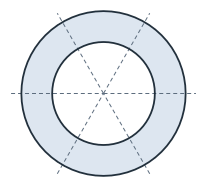
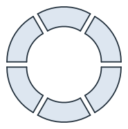
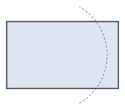
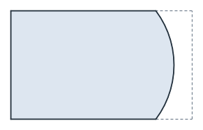
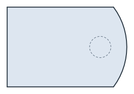
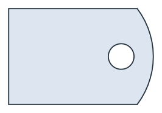
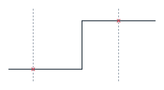
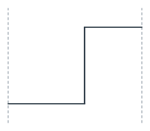

Splitting and trimming
Split(cutter) cuts every face and wire along a cutter and returns the pieces as a list of shapes. Trim(cutter, ...) keeps only the pieces that one rule selects. The pieces keep the name and the properties of the face, and the new edges take those of the cutter. A cutter can be:
a wire, an edge, a face or a shape;
a sketch;
an OpenCASCADE shape, which is projected onto the plane first.
[1]:
import math
import netgen.occ as occ
import planex as px
A segmented ring
The example is a thrust ring with an outer diameter of 80 and a bore of 50, cut into six segments by three joint lines through its center (Figure 1a). Every segment is a sixth of the ring. In Figure 1b, the segments are moved apart along the lines from the center to their own centers.
[3]:
ring = px.QuickSketch().Circle(40, name="outer").Face() - px.QuickSketch().Circle(25, name="bore").Face()
ring.name = "segment"
joints = px.QuickSketch()
for angle in (0, 60, 120):
x, y = 45 * math.cos(math.radians(angle)), 45 * math.sin(math.radians(angle))
joints.Move((-x, -y)).Line((x, y), name="joint")
segments = ring.Split(joints)
exploded = []
for segment in segments:
x, y, _ = segment.center
exploded.append(segment.Translated((4 * x / math.hypot(x, y), 4 * y / math.hypot(x, y))))

(a) The ring and the joint lines

(b) Six segments
Every segment has the area π (40² − 25²) / 6, and the segments keep the ring’s name, while the new edges are named joint:
[5]:
exact = math.pi * (40**2 - 25**2) / 6
print(len(segments), "segments, largest difference", max(abs(s.mass - exact) for s in segments))
print({s.name for s in segments}, sorted({e.name for s in segments for e in s.edges}))
6 segments, largest difference 4.547473508864641e-13
{'segment'} ['bore', 'joint', 'outer']
Trimming a blank
The example is a cover plate of 100 × 60 with a rounded end. The rectangular blank is trimmed along an arc of radius 50 about (40, 30), named rounded end (Figure 2a). The arc runs upward, counterclockwise, so the plate lies on its left and the offcut, dashed, on its right (Figure 2b).
[6]:
blank = px.QuickSketch().Rectangle(100, 60).Face()
x, y = 40 + 50 * math.cos(math.radians(60)), 50 * math.sin(math.radians(60))
end = px.Arc((x, 30 - y), (x, 30 + y), center=(40, 30))
end.name = "rounded end"
cover = blank.Trim(end, keep_left=True)
offcut = blank.Trim(end, keep_right=True)

(a) The blank and the arc

(b) The cover
The cover is a rectangle of 40 × 60 and the part of the disc of radius 50 between y = 0 and y = 60, and the cover and the offcut add up to the blank:
[8]:
exact = 40 * 60 + 30 * math.sqrt(50**2 - 30**2) + 50**2 * math.asin(30 / 50)
print("cover", cover.mass, "exact", exact)
print("cover and offcut", cover.mass + offcut.mass, "blank", blank.mass)
print("named edges:", sorted({e.name for e in cover.edges if e.name}))
cover 5208.752771983211 exact 5208.752771983211
cover and offcut 6000.0 blank 6000.0
named edges: ['rounded end']
Closed cutters punch holes
A closed cutter inside a face separates a piece. The example is a circle of radius 8 at (70, 30) on the cover. Split returns the plate with the hole and the slug, and Trim with remove_closest_to set to the circle’s center punches the hole (Figure 3).
[9]:
punch = px.QuickSketch().Circle(70, 30, 8, name="hole").Wire()
plate, slug = sorted(cover.Split(punch), key=lambda s: -s.mass)
punched = cover.Trim(punch, remove_closest_to=(70, 30))
print("slug", slug.mass, "exact", 64 * math.pi)
print("punched", punched.mass, "exact", exact - 64 * math.pi)
slug 201.06192982974676 exact 201.06192982974676
punched 5007.690842153464 exact 5007.690842153464

(a) The cover and the punch

(b) Punched
Wires
Wires split into runs. The example is a pipe route that passes two walls, at x = 10 and x = 45 (Figure 4a). It splits into three runs of 10, 55 and 15, and the run between the walls is the longest (Figure 4b).
[11]:
route = px.FromPolyline([(0, 0), (30, 0), (30, 20), (60, 20)], name="pipe")
walls = px.QuickSketch((10, -5)).Line((10, 25), name="wall")
walls.Move((45, -5)).Line((45, 25), name="wall")
runs = route.Split(walls)
inside = route.Trim(walls, keep_largest=True)
print(sorted(run.wires[0].mass for run in runs), "run between the walls", inside.wires[0].mass)
[10.0, 15.0, 55.0] run between the walls 55.0

(a) A pipe route and two walls

(b) The run between the walls
Cutters from 3D
An OpenCASCADE shape as the cutter is projected into the plane first. The example is a post of radius 6 that stands on the cover at (25, 30). Its footprint is the smallest piece:
[13]:
post = occ.Cylinder(occ.Pnt(25, 30, 0), occ.Z, 6, 20)
footprint = cover.Trim(post, keep_smallest=True)
print("footprint", footprint.mass, "exact", 36 * math.pi)
footprint 113.09733552923255 exact 113.09733552923255
The rules
Each Trim takes exactly one rule. Faces and wires that the cutter does not separate stay as they are.
Rule |
Keeps |
|---|---|
|
The piece whose center is nearest to p (for a wire, the run nearest to p) |
|
Every piece except that one |
|
The piece selected by area (for a wire, by length) |
|
The side of the cutter as it is drawn; for a counterclockwise circle, left is inside (faces only) |
In a sketch, Trim and Split work on elements by their ids instead. See Trimming and splitting for details.